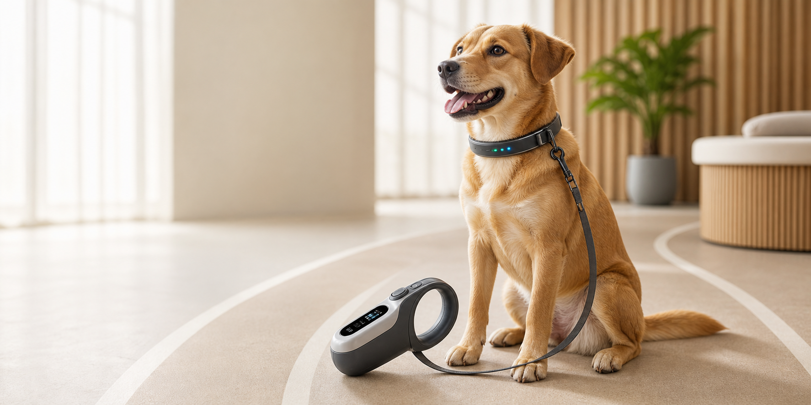

热量、心率、体温和距离集中展示
陪伴每一次出门
更懂狗狗的散步助手
把散步、健康、距离提醒和日常记录放在一起，打开就能知道今天该怎么陪它运动。

时长、距离、速度曲线同步记录
保留每日散步和便便健康记录
今日概览
Luna 今天很好
根据当前运动和健康数据生成今日建议
热量 128 / 350 kcal
快走
正常
安全
今日建议
3.5-6 km/h
时长75 min
热量350 kcal
完成60%
温柔提醒
2 条
- 注意髋关节和体重管理
- 便便记录健康
- 晚间散步未开始
散步中
陪 Luna 走一圈
轨迹、时长、消耗和曲线都在这里
主人
Luna
心率曲线96-138 bpm
速度曲线2.8-6.1 km/h
生活记录
每天都有迹可循
散步和便便记录会按天保留
散步记录7 天
便便记录7 天
家庭成员
管理狗狗档案
多只狗狗可以分别保存体型和运动目标
健康助手
随时问问养护建议
可以询问散步量、便便状态、体温心率和日常护理
当前分析
Luna
今日目标
75 min · 350 kcal
AI 状态
检测中
安心守护
提醒更温和
跑远、牵引过紧和状态异常都会先轻提醒
正常
温和提醒
安全